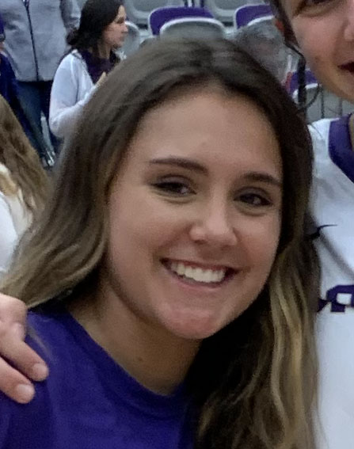
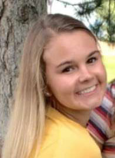
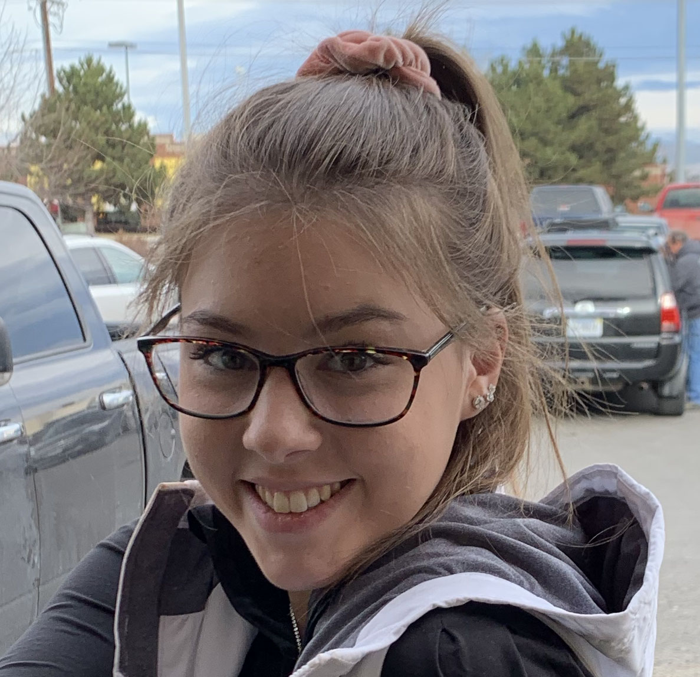
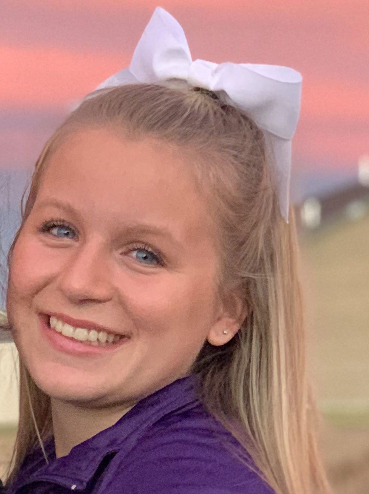

The Walla Walla Volleyball Club Coaching Staff
Coach Ellie Sievertsen was born and raised in Walla Walla. She graduated Walla Walla High School in 1994, and went on to play volleyball at University of Nebraska. She graduated college with a degree in business and Spanish, and decided to move back home and became a pioneering busineswoman a well as a coach. She is the U16 black coach, and has been so for 7 years now.
Coach Dani Olsen is originally from Bozeman, Montana. She graduated from Bozeman High in 1993 and played volleyball at Stanford University. After graduating with a degree in political science, she attended Harvard School of Law, married, and settled down here in Walla Walla. She has been our U18 coach for 4 years now.
Coach Abigail Racicot is our U14 kids coach. She is from Missoula, Montana. After graduating high school with honors in 1993, she moved to Nebraska and attended University of Nebraska where she also played volleyball. After meeting Ellie, they soon became best friends and Abby decided to move back to Walla Walla with Ellie. Abby has been a coach here for 6 years.
Coach Cecilia Schuh is our U12 coach. She is from Spokane. After graduating high school with in 1992, she attended Pepperdine University to play volleyball. She married, and her husband, Austin, is from Walla Walla. They decided to come back here and settle down, Cia being a teacher and Austin being a doctor. Cia has been teaching wonderful skills to our 12 year olds for 2 years.